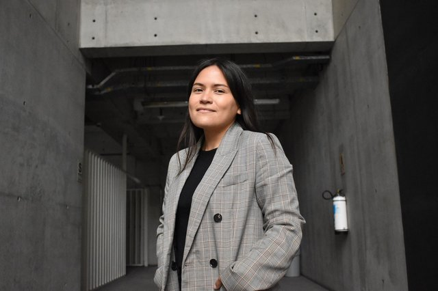
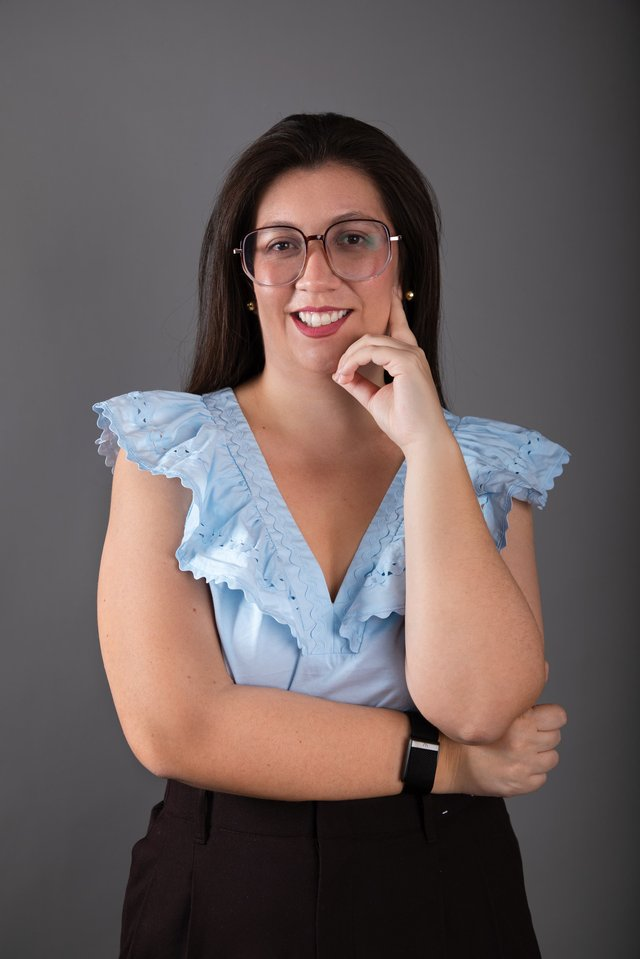

Primero entendemos el problema y el proceso. Luego implementamos tecnología para mejorar las experiencias.
Un startup puede lanzar el MVP de una solución tecnológica en dos semanas. Hoy el verdadero diferencial está en el conocimiento experto del mercado.
Quienes más conocen el mercado no siempre tienen la oportunidad de testear soluciones con la misma rapidez.
Unimos el conocimiento del negocio con tecnología para diseñar y testear rápidamente nuevas soluciones que agreguen valor a tus clientes.
Implementar tecnología es sencillo. Probar que funciona requiere mover la maquinaria de la empresa — ahí es donde entramos.
Planteamos opciones de solución para los problemas que ya identificaste, documentaste y validaste.
Elegimos una opción y hacemos un PoC en menos de 10 semanas, apoyado en tecnología.
Tú ya identificaste el problema, nosotros ejecutamos las potenciales soluciones por ti.
Diseñamos un piloto en el área más crítica del negocio, donde existe mayor potencial de quick wins e impacto inmediato.
Levantamos información de procesos actuales, responsabilidades y carga en roles clave para identificar ineficiencias y desbalances.
Desarrollamos una propuesta de estructura organizacional y de procesos, con roles definidos y alineados a eficiencia y rentabilidad.
Evaluamos soluciones tecnológicas que permitan automatizar, simplificar y mejorar la gestión y el control de los procesos.

Diseña y facilita programas que convierten ideas en MVPs dentro de empresas. Hoy lidera Growth en ELSA, B2B SaaS ganadora del Cartier Women’s Initiative.

Conecta necesidades del negocio con soluciones digitales concretas. Hoy es Product Advocate Manager en Metabase y cofundadora de Centro de Urbanismo.
Cuéntanos el problema que ya identificaste. Vemos juntas si Lyna es el siguiente paso.